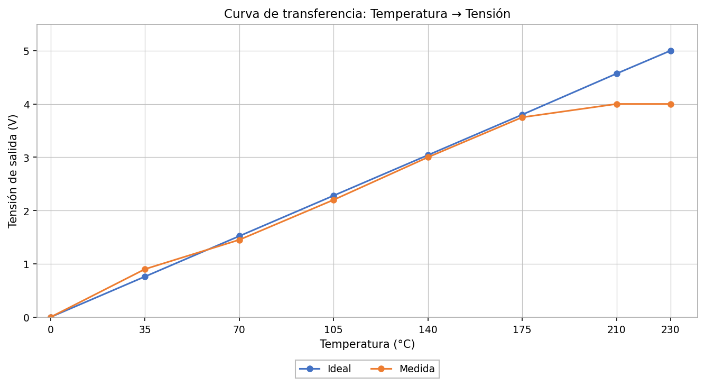
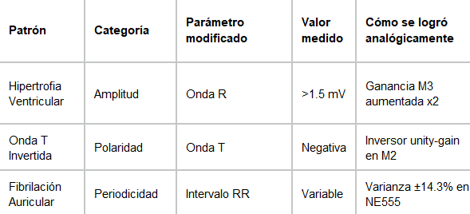

Póster Integrador · Electrónica Analógica III · 2026
Del Amplificador Operacional
al Prototipo Biomédico ECG
Autores
Emerson Felipe Barrera Ramos 20241221637
Dominy Melandri Cadena Soto 20241221638
Daniel Stiven Olarte Fernández 20241221589
Jerónimo Pérez Pérez 20241221419
Docente
Ing. Julián Adolfo Ramírez Gutiérrez
Contexto del curso
Electrónica Analógica III — Semestre 2026-I
Este curso desarrolló una ruta de aprendizaje en electrónica analógica que avanzó desde el conocimiento de componentes y bloques funcionales hacia el diseño, la manufactura, el modelado y la validación experimental de soluciones.
Los cinco proyectos del semestre no son trabajos independientes: cada uno cumplió un papel formativo específico y construyó sobre los aprendizajes del anterior, conformando una ruta progresiva que cerró con la implementación y validación de un sintetizador de señal ECG analógico.
5
Proyectos
integrados
integrados
5
Módulos
analógicos
analógicos
3
Patrones ECG
simulados
simulados
Los cinco proyectos — ruta de formación en electrónica analógica
Cada proyecto tuvo una función distinta dentro de la ruta: apropiación técnica inicial, concepción de una solución a partir de un problema real, especificación para manufactura, investigación y modelado del sistema, e implementación con validación experimental.
Proyecto 1
Apropiación técnica — 5 topologías op-amp verificadas en laboratorio
Proyecto 2
Solución desde un problema real — acondicionador térmico CESURCAFÉ
Proyecto 3
Manufactura industrial — diseño PCB con reglas DFM · EasyEDA / JLCPCB
Proyecto 4
Arquitectura del sintetizador ECG — modelado de 5 módulos analógicos P·Q·R·S·T
Proyecto 5
Validación funcional del prototipo — comparación experimental con parámetros AHA 2021
§ 01
Ruta de Aprendizaje — Cinco proyectos, una progresión formativa
Progresión formativa del semestre: componente → bloque funcional → PCB industrial → arquitectura de sistema → prototipo validado experimentalmente
§ 02
Proyectos P1–P4 — Etapas de la Ruta Formativa
Cada proyecto cumple un papel formativo distinto con propósito claro, reto técnico específico, evidencia obtenida y aprendizaje transferido a los proyectos siguientes
01
Proyecto 1 · Amplificador operacional y apropiación técnica
Fundamentos prácticos: 5 topologías op-amp en protoboard
Propósito
Construir y medir 5 bloques funcionales op-amp en protoboard: conversor F/V, amplificador de instrumentación, filtro Sallen-Key 2°, Schmitt Trigger y oscilador Wien.
Reto técnico
Evidencia principal
F/V
2.47 V @ 1 kHz · error 1.2%
IA
G=987 · error 1.3%
SK
fc=148 Hz · error 1.3%
ST
VH−VL=1.96 V · error 2%
Wien
f=1.02 kHz · error 2%

Oscilador Wien — UA741 · Rigol DS1054Z

Amp. de Instrumentación — NI Multisim · TL084 + Rg
Aprendizaje clave
Los bloques op-amp son reutilizables. El IA y el filtro SK construidos aquí se emplean directamente en P2, P4 y P5 — sin esta apropiación técnica, la integración de 5 módulos en P5 habría sido inmanejable.
02
Proyecto 2 · Solución desde un problema real
Acondicionador de señal para termopar K — CESURCAFÉ
Propósito
Diseñar un sistema que permitiera a CESURCAFÉ monitorear temperatura de tueste (0–230 °C) partiendo de la necesidad real del usuario, no de un enunciado de laboratorio.
Reto técnico
Evidencia principal — comparación experimental (7 puntos de calibración)
Sensor
Termopar K
~41 µV/°C
→
Amplifica
AD620AN
G ≈ 987
→
Filtra
Sallen-Key
fc = 10 Hz
→
Salida
0 – 5 V
R²=0.9994

Simulación NI Multisim — cadena completa

Curva de transferencia: ideal vs medida · R²=0.9994
Aprendizaje clave
La necesidad real redefine el diseño: la visita a CESURCAFÉ reveló que la prioridad era detectar el punto de primer crack (~196 °C), no monitorear la curva completa. Se agregó una etapa comparadora con umbral ajustable (LM393) — el MVP pasó de visor continuo a alarma de umbral.
03
Proyecto 3 · Manufactura industrial
Del protoboard al producto fabricable: PCB con EasyEDA / JLCPCB
Propósito
Transformar el circuito de P2 en un diseño listo para fabricación industrial, aplicando reglas DFM y generando los archivos de manufactura para JLCPCB.
Reto técnico
Evidencia principal — validación funcional protoboard vs PCB

Layout 2D — EasyEDA · reglas DFM aplicadas

PCB fabricada — JLCPCB · Render 3D
PROTOBOARD
Ruido alto · nodo: ~2 Ω · no replicable
PCB INDUSTRIAL
Ruido reducido >90% · nodo: <0.01 Ω · 5 unidades ✔
Aprendizaje clave
El sustrato físico es parte del diseño analógico. Las reglas DFM no son restricciones — son el lenguaje entre diseñador y fabricante. El plano de tierra continuo redujo el ruido en más del 90%, una mejora imposible en protoboard.
04
Proyecto 4 · Arquitectura del sintetizador ECG
Modelado de 5 módulos analógicos independientes — generadores P, Q, R, S y T
Propósito
Investigar la morfología de la señal ECG y diseñar la arquitectura de 5 módulos analógicos que generan cada subonda de forma independiente, antes de construir el prototipo.
Reto técnico
Evidencia principal — Esquema de bloques técnico: Generadores P · Q · R · S · T
Generadores:
P
Q
R
S
T
→ Sumador analógico → Señal ECG completa
M1
Oscilador Maestro
NE555
→
M2
Gen. Ondas P & T
RC + Integrador
→
M3
Gen. Q·R·S
TL074ACN
→
M4
Sumador Analógico
TL074ACN
→
M5
Salida + Seg. ST
TL071
Aprendizaje clave
Descomponer correctamente es la mitad de la solución. La señal ECG es la superposición de 5 subondas independientes. Especificar cada módulo antes de construirlo redujo significativamente el tiempo de depuración en P5.
§ 03
Proyecto 5 — Validación Funcional del Sintetizador ECG
Integración incremental M1→M5 · Comparación experimental frente a señales de referencia AHA 2021 · 3 patrones ECG simulados
05
Proyecto 5 · Validación funcional — cierre de la ruta formativa del semestre
Señales de referencia AHA 2021 verificadas experimentalmente · 3 patrones ECG simulados con electrónica analógica discreta
Propósito
Construir el sintetizador ECG de 5 módulos mediante integración incremental (M1→M5), verificar la señal resultante contra las señales de referencia del estándar AHA 2021, y demostrar 3 patrones ECG simulados de categorías distintas.
Reto técnico
Módulo M4 — Sumador Analógico (TL074ACN)

Evidencia principal — comparación experimental con señales de referencia AHA 2021
| Parámetro | Referencia AHA | Medido | Estado |
|---|---|---|---|
| Frecuencia cardíaca | 60–100 lpm | 75 lpm | ✔ Válido |
| Intervalo PR | 120–200 ms | 160 ms | ✔ Válido |
| Duración QRS | 60–100 ms | 80 ms | ✔ Válido |
| Intervalo QT | 350–440 ms | 380 ms | ✔ Válido |
| Amplitud onda R | 0.5 – 1.5 mV | 1.1 mV | ✔ Válido |
| Segmento ST | ±0.1 mV | +0.05 mV | ✔ Válido |
Aprendizaje clave
La señal cardíaca se sintetiza íntegramente con electrónica analógica. Amplificación, filtrado, integración y suma ponderada — todas las técnicas del semestre convergieron en un único instrumento cuya señal fue verificada experimentalmente frente a señales de referencia AHA 2021 (señales simuladas, no de uso clínico).
Estrategia de integración incremental M1 → M5
Señal de referencia — Ritmo Sinusal Normal (base de comparación)

✔ FC=75 lpm · PR=160ms · QRS=80ms · QT=380ms — verificado frente a señales de referencia AHA 2021
3 patrones ECG simulados — comparación experimental por categoría


Resumen técnico — 3 patrones ECG simulados

§ 04
Conclusiones — Lo que la ruta nos enseñó
Apropiación técnica → solución desde problema real → manufactura → modelado → validación funcional
01
Proyecto 1
Apropiación técnica op-amp
El amplificador diferencial es la base para extraer señales de microvoltios sobre ruido de red (60 Hz) — aprendizaje transferido directamente a P2 y P5.
Construir y medir 5 topologías estableció el vocabulario técnico compartido del equipo y los protocolos de trabajo que sostuvieron los proyectos siguientes.
02
Proyecto 2
Solución desde necesidad real
La visita a CESURCAFÉ cambió el diseño: la solución correcta era una alarma de umbral, no un visor continuo. La evidencia redefinió el producto.
La cadena Sensor→IA→Filtro→Salida (R²=0.9994) demostró que los bloques de P1 resuelven problemas industriales reales sin procesamiento digital.
03
Proyecto 3
Manufactura industrial PCB
El flujo EasyEDA→JLCPCB demostró que la calidad industrial ya es accesible: menos de $2 USD por unidad, en 2 semanas, con reglas DFM estándar.
Ruido reducido >90% al pasar a PCB: el sustrato físico es parte del diseño analógico, no solo el esquemático.
04
Proyecto 4
Arquitectura del sintetizador
La arquitectura de 5 módulos independientes P·Q·R·S·T demostró que descomponer correctamente el problema es la mitad de la solución.
Especificar cada módulo antes de construirlo (requerimientos AHA 2021) redujo el tiempo de depuración en P5 de forma significativa.
05
Proyecto 5
Validación funcional del prototipo
Los 6 parámetros verificados frente a señales de referencia AHA 2021 confirman que la señal sintetizada cumple los valores estándar.
Los 3 patrones ECG simulados (amplitud, polaridad, periodicidad) confirman la versatilidad del generador para la comparación experimental.
Conclusión integradora de la ruta formativa
Cinco proyectos. Una ruta de formación en electrónica analógica. Cada etapa preparó la siguiente.
La ruta avanzó desde la apropiación de componentes hasta la validación funcional de un prototipo completo: P1 construyó el vocabulario técnico con 5 topologías op-amp; P2 ancló esos bloques a una necesidad real (CESURCAFÉ); P3 superó la barrera entre protoboard y manufactura industrial; P4 modeló los generadores P·Q·R·S·T antes de construir; y P5 integró todo en un sintetizador ECG verificado experimentalmente frente a señales de referencia AHA 2021, incluyendo 3 patrones ECG simulados. Resultado: una ruta de aprendizaje documentada y replicable — componente → bloque funcional → PCB → arquitectura → prototipo validado funcionalmente.
Referencias
- Sedra, A. S., & Smith, K. C. (2020). Microelectronic Circuits (8th ed.). Oxford University Press. Cap. 8–11.
- Ries, E. (2011). The Lean Startup. Crown Business. Referente metodológico de apoyo en P2 para la fase de identificación de necesidades con usuario real.
- Horowitz, P., & Hill, W. (2015). The Art of Electronics (3rd ed.). Cambridge University Press. Cap. 7.
- Tompkins, W. J. (1993). Biomedical Digital Signal Processing. Prentice Hall. Morfología de la señal ECG y parámetros de referencia.
- Ulaby, F. T., & Maharbiz, M. M. (2010). Circuits. National Technology & Science Press. Fundamentos de electrónica analógica para apropiación técnica en P1.
- Texas Instruments. (2020). TL07x Low-Noise JFET-Input Operational Amplifiers. Datasheet SLOS081K.
- Analog Devices. (2017). AD620 Low Cost, Low Power Instrumentation Amplifier. Datasheet AD620A/AD620B.
- American Heart Association. (2021). Recommendations for ECG Standardization. Circulation, 143(5), e154–e161. Criterios de validación usados en P4–P5.
- JLCPCB. (2024). PCB Manufacturing Capabilities & Design Rules. jlcpcb.com/capabilities. Reglas DFM aplicadas en P3.

Emerson F. Barrera
20241221637

Dominy M. Cadena
20241221638

Daniel S. Olarte
20241221589

Jerónimo Pérez
20241221419